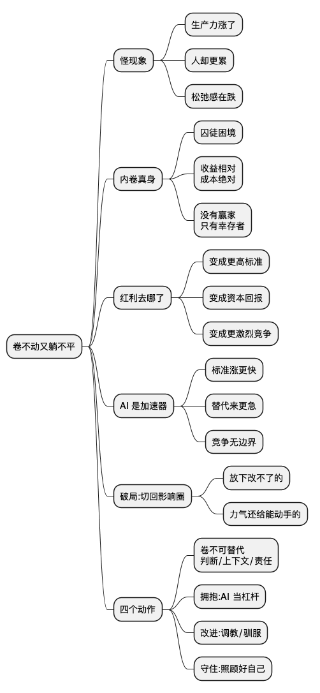

卷不动又躺不平：AI 时代，普通技术人的破局姿势
Posted on 六 22 8月 2026 in Journal
| Abstract | 卷不动又躺不平：AI 时代的破局姿势 |
|---|---|
| Authors | Walter Fan |
| Category | Journal |
| Status | v1.0 |
| Updated | 2026-08-22 |
| License | CC-BY-NC-ND 4.0 |
短大纲
- 一个说不通的怪现象：生产力涨了，人却更累了
- 内卷的真身：一场没有赢家的博弈
- 生产力红利到底去哪儿了
- AI 是加速器，不是原因
- 破局：从关注圈切回影响圈
- 技术人的四个具体动作
- 一句话的姿势：顺势、开放、驯服
一、一个说不通的怪现象
先说个我最近老在想的事。
按道理讲，技术每进一步，人应该更轻松才对。洗衣机出来了，主妇不用手搓一下午；编译器出来了，程序员不用手写机器码；云计算出来了，我们不用自己扛机柜。每一样都是"用机器换人力"，省下来的时间理应还给生活。
可现实是反的。这两年身边的对话，从"下班一起打球"变成了"这个月绩效怎么算"。00 后进来整顿了一阵职场，然后大家发现，能整顿的其实不多；Work-life Balance 没人提了，取而代之的是灵活就业、中年失业、年轻人难就业、消费疲软、经济不振。工具越来越强，人却越来越紧。老板卷，员工也卷，谁都不敢先松一口气。
这就怪了。生产力明明在涨，松弛感却在跌。说好的"物质极大丰富、生活更幸福"呢？
我不打算在这儿骂大环境——骂完除了更累，什么都不会变。我想干的是另一件事：把这个怪现象背后的机制拆开看看，然后落到一个普通技术人今天下午就能动手的地方。
二、内卷的真身：一场没有赢家的博弈
先给"卷"正个名。卷不是道德问题，是结构问题。用博弈论的话说，它是一个典型的囚徒困境。
设想一个班，老师按排名给分。所有人都熬夜刷题，结果排名和不刷题时一模一样，只是所有人都睡眠不足。每个人的算计都没错：别人刷我不刷，我垫底；别人刷我也刷，至少不吃亏。 于是最优策略就是刷，哪怕全班一起刷等于白刷。
职场就是这个班的成人版。加班到十点的人多了，八点走的就显得不上进；同事都在学 AI 工具，你不学就怕被比下去。每个人单独看都在做"理性选择"，合起来却把所有人推进了一个谁都不想要的均衡——投入涨了一大截，相对位置一动没动，多出来的只有普遍的疲惫。
这里有个关键点，是我年轻时没想明白的：卷的收益是相对的，成本是绝对的。
你多熬的那两小时，能不能换来晋升，取决于别人熬没熬——这是相对的，随时会被对方跟上而清零。可你熬掉的睡眠、错过的孩子睡前故事、透支的身体，是实打实扣在你自己账上的，谁也不会还给你。一场所有人都在加码、成本却各自承担的游戏，注定没有赢家，只有幸存者。
想通这一层，至少能少一点自我攻击：你累，很大一部分不是因为你不够努力，而是因为你被卷进了一个结构。 这不是给躺平找借口，而是把矛头从"我是不是废物"挪回"这个局是怎么设计的"——只有看清局，才谈得上破局。
三、生产力红利到底去哪儿了
那第二个问题就来了：技术进步省下的时间，为什么没变成我们的闲暇？
经济学里有个老得掉牙、却一直没被推翻的观察：技术进步带来的红利，会被重新分配，而分配的方式并不天然对普通劳动者有利。
省下来的时间，大致有三个去处。
第一个去处：变成了更高的标准。 汽车让通勤更快，于是公司可以把办公室建得更远、招人的半径拉得更大；文档协作工具让改稿更方便，于是需求方一天能让你改五版。工具把"一件事的成本"打下来，需求方立刻把"要做多少件事"顶上去。省下的时间没进你口袋，变成了水涨船高的期望值。
第二个去处：变成了资本的回报。 一条产线自动化了，省下十个工人的工资。这笔钱多半不会平摊给留下来的人涨薪,而是变成利润。掌握资本和平台的一方,拿走了生产力提升的大头。这不是阴谋，是分配规则本身——议价能力强的一方,拿走剩余。 普通打工人的议价能力,恰恰是被技术进步一点点削弱的:你会的东西,越来越容易被工具或更便宜的人替代。
第三个去处：变成了更激烈的竞争。 全球化 + 互联网,让原本被地理隔开的人挤到了同一个赛道。你不再只跟隔壁工位竞争,而是跟全国、乃至全球会同样技能的人竞争。市场变大了,顶尖的赢家通吃,腰部的空间被压薄。
三个去处叠加,结论就清楚了:生产力提升是真的,普通人过得更累也是真的,这两件事一点都不矛盾。 红利存在,只是没按"人人有份"的方式发下来。凯恩斯 1930 年预言我们这代人每周只用工作 15 小时,他算对了生产力,算错了人性和分配。
四、AI 是加速器,不是原因
理解了上面这套,再看 AI 就没那么慌了。
AI 没有发明内卷,也没有发明"红利被重新分配"。它做的是把这两件本来就在发生的事,一脚油门踩到底。
- 它让"标准"涨得更快:以前一个人一天出一版设计,现在借 AI 一上午出五版,于是"一天五版"成了新基线。
- 它让替代来得更急:过去一项技能吃十年,现在可能三年就被模型追平。会写模板代码、会做基础翻译、会套报表的岗位,首当其冲。
- 它让竞争更没有边界:一个人 + 一堆 AI,产出顶得上过去一个小团队,腰部岗位被进一步抽薄。
所以"AI 让更多人失业、让更多人更辛苦",在短期、在局部,是真的。承认这一点,不是悲观,是诚实——看不清威胁的乐观,是最不牢靠的乐观。
但也别把 AI 当成那个该被砸烂的织布机。历史上每一次这种级别的技术跃迁,短期都伴随剧烈的阵痛和岗位消失,长期却又都创造出当时没人能想象的新工作。汽车干掉了马车夫,却造出了整条汽车工业和物流业。区别只在于:阵痛落在谁头上,红利又流向谁。 而这两件事,恰恰有一部分,取决于你此刻怎么站位。
到这儿,诊断部分结束。剩下的,全是出路。
五、破局:把力气从关注圈切回影响圈
我之前写过一篇《影响圈和关注圈》,讲柯维那张最朴素的地图:关注圈是你关心的一切,影响圈是其中你真正能动手改变的那一小块。这篇的所有出路,其实都长在那张图上。
上面拆的那些——内卷的结构、红利的分配、AI 的冲击——绝大部分在你的关注圈里,不在你的影响圈里。 你没法一个人取消囚徒困境,没法改写资本的分配规则,也没法让 AI 慢下来。天天盯着这些看,只会把自己看进焦虑,一行代码都不会因此变好。
真正的破局,是先做一个减法动作:把改不了的那部分,平和地放下;把注意力,全部还给你能动手的那一小块。 认命不是躺平,是把有限的精力从无底洞里抽回来。
那影响圈里,还剩什么?我认为剩下四件顶顶重要的事,恰好对应这个时代的四个动作。
六、技术人的四个动作
动作一:换赛道——从"卷绝对投入"到"卷不可替代"
前面说了,卷绝对投入是囚徒困境,越卷越亏。破法不是卷得更狠,是换一个别人不容易跟进的维度去竞争。
拼谁写代码快?这条赛道 AI 已经上来了,再往里挤是死路。但下面这些,AI 短期还够不着:
- 判断力:知道该做什么、不该做什么,比知道怎么做更值钱。需求对不对、架构选型合不合理、这个技术债现在还是以后还——这是模型给不了你的。
- 上下文:你对这个业务、这个团队、这些历史包袱的理解,是喂给 AI 的燃料,而不是 AI 能自带的。
- 责任与信任:出了线上事故,是你去顶,不是模型。能被托付、扛得住事的人,永远稀缺。
- 把人和事捏合起来的能力:跨部门拉齐、把模糊需求聊清楚、在冲突里找到落点——这些"人味很重"的活,是最后被替代的。
一句话:别在 AI 最强的地方跟它硬拼,去它够不着的地方扎根。
动作二:拥抱——把 AI 从对手变成杠杆
对 AI,最亏的姿势是回避。你不用,别人用;等你想用的时候,已经落后一个身位。
保持一个开放的心态,主动把 AI 拽进你的日常工作流:让它写初稿、跑数据、查文档、做重复劳动,把你自己腾出来干判断和创造。这不是背叛"手艺",是用机器换人力这件事,这次轮到你自己来做甲方。 同样八小时,别人还在手搓,你已经在指挥一支 AI 小队,产出差距会以肉眼可见的速度拉开。
真正被 AI 淘汰的,大概率不是"被 AI 取代的人",而是"不会用 AI 的人被会用 AI 的人取代"。
动作三:改进——从用它,到调教它
用熟了 AI,再往上走一步:去改进它、去驯服它。
- 把你领域里那些散落在老工程师脑子里的判断,沉淀成 prompt、成 workflow、成给模型看的规范和上下文;
- 搭自己的小工具、小 agent,让 AI 按你的章法干活,而不是你去迁就它的脾气;
- 在团队里做那个"把 AI 用出花来"的人,定义你们该怎么用、哪些能交给它、哪些必须人来兜底。
会用 AI 的人已经不稀奇了,能驾驭 AI、给 AI 立规矩的人,才是下一波真正的稀缺资源。这一步,恰恰是把你的影响圈往外撑大。
动作四:守住——照顾好那个"你自己"
最后一个动作,最容易被忽略,却是所有动作的地基。
卷是长跑,不是冲刺。这一局大概率要打十年二十年,能笑到最后的,不是某一年冲得最猛的,而是没在半路把自己熬垮的。 身体、家人、还能睡个好觉的能力——这些百分之百在你的影响圈里,也是这个疯狂的局里,你唯一能完全说了算的东西。
别用绝对的健康,去换相对的排名。那笔账,长期看永远是亏的。
总结
回到开头那个问题:到底是怎么了?
答案不玄乎:生产力一直在涨,但它省下的时间,被更高的标准、资本的回报和更激烈的竞争瓜分了,没按人人有份的方式发到普通人手里。内卷是这局里每个理性人的必然选择,AI 只是把这一切踩了油门。 你累,大半是结构的锅,不必因此自我怀疑。
但看清结构,不是为了认输,是为了知道劲该往哪儿使。改变你能改变的,影响你能影响的,剩下的,平和接受。顺应潮流没什么可耻——随波逐流也好,只要别逆流硬顶。保持开放,拥抱变化,拥抱 AI,在它够不着的地方找到你的价值,再一步步反过来驯服它。
这世界确实有太多让人不满的地方,可你能动手的事,永远比你以为的多一点点。
孙中山先生有句话,今天读起来一点不过时:
世界潮流,浩浩荡荡,顺之则昌,逆之则亡。
AI 就是这一代人要面对的浩荡潮流。不必焦虑,不必彷徨。潮水来的时候,与其站在岸上骂它,不如学会冲浪。
思维导图

@startmindmap
* 卷不动又躺不平
** 怪现象
*** 生产力涨了
*** 人却更累
*** 松弛感在跌
** 内卷真身
*** 囚徒困境
*** 收益相对\n成本绝对
*** 没有赢家\n只有幸存者
** 红利去哪了
*** 变成更高标准
*** 变成资本回报
*** 变成更激烈竞争
** AI 是加速器
*** 标准涨更快
*** 替代来更急
*** 竞争无边界
** 破局:切回影响圈
*** 放下改不了的
*** 力气还给能动手的
** 四个动作
*** 卷不可替代\n判断/上下文/责任
*** 拥抱:AI 当杠杆
*** 改进:调教/驯服
*** 守住:照顾好自己
@endmindmap
行动清单
不用等,这周就能挑两件试:
- 列一张自己的"AI 替代不了"清单:判断、上下文、责任、协作,你最强的是哪一项?下季度就往那儿加码
- 挑一件每天都做的重复劳动,这周试着交给 AI,把省下的时间投到判断和创造上
- 把你脑子里某一条"老工程师才懂"的判断,写成一段 prompt 或一份规范,让 AI 也能照着做
- 在团队里主动当那个"研究怎么用好 AI"的人,先在一个小场景里跑通再推广
- 给自己定一条健康红线(比如几点必须睡),这条线不为任何排名让步
- 下次又想骂大环境时,抱怨完一句就接一句"那我今天能做什么",逼大脑从关注圈切回影响圈
扩展阅读
- 影响圈和关注圈:一个被我反复忽略、又反复救我的坐标系
- Stephen Covey, The 7 Habits of Highly Effective People
- John Maynard Keynes, Economic Possibilities for Our Grandchildren (1930)
- 《道德经》:"知其不可奈何而安之若命。"
- 孙中山:"世界潮流,浩浩荡荡,顺之则昌,逆之则亡。"
本作品采用知识共享署名-非商业性使用-禁止演绎 4.0 国际许可协议进行许可。